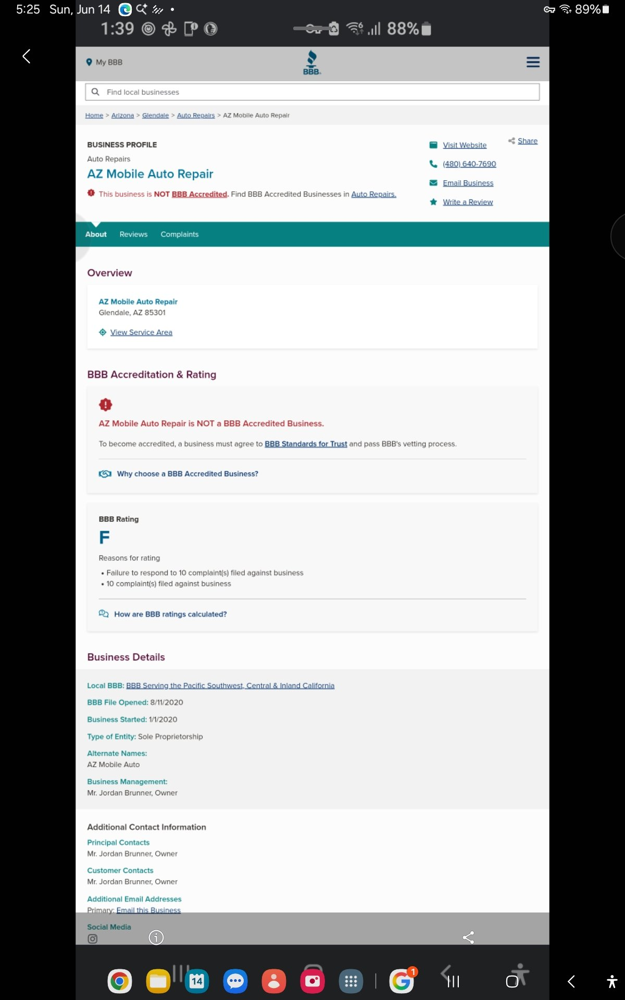
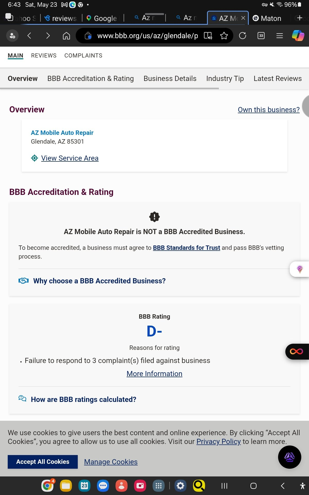
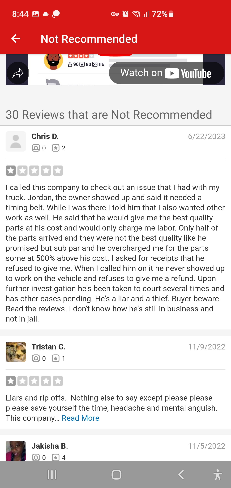

Jordan Brunner — Swift Fix Mobile Auto LLC: Consumer Warning
Queen Creek / San Tan Valley, Arizona · Compiled entirely from public records · Last updated November 15, 2026
Before you hand your keys — or your money — to Jordan Brunner or Swift Fix Mobile Auto, read the documented public record behind the name.
The business
| Legal name | Swift Fix Mobile Auto LLC (Arizona) |
| Owner / member | Jordan James Brunner (per Arizona Corporation Commission filing, August 2026) |
| Address | 776 W Trellis Rd, Queen Creek, AZ 85140 |
| Phone | (520) 683-4078 |
| Previously operated as | AZ Mobile Auto Repair (Glendale, AZ, since 2020) and AZ Mobile Auto (Anthem, AZ) — same owner |
The public record
- Cottonwood Police report (May 2017): Brunner was arrested as the driver who dropped off and picked up the men who burglarized the Hookies N Bookies vape store in Cottonwood — about $15,000 in merchandise taken. This is the 2017 case behind his Yavapai County probation. (Cottonwood PD incident W17005618)
- Cottonwood Police report (October 2018): cited for stealing his own grandmother's business debit card (Sedona Air Tours) and charging $551.18 — while on probation for the burglary. (Cottonwood PD incident W18013927)
- Yavapai County Sheriff (March 2017): Brunner admitted to a deputy that he stole his sister's debit card; $213.04 was charged before it was deactivated, and he had offered her $500 to drop the charges. (Incident report 17-007696)
- Maricopa County Sheriff (February 2026): misdemeanor theft report naming Jordan J. Brunner as the suspect. (Report IR26003144)
- Peoria Municipal Court: State of Arizona vs. Jordan James Brunner, case M-0750-CT-202200364 — disposition September 2024: failure to comply on civil traffic offenses, with a history of defaults; a registration hold was placed at MVD in March 2026. (azcourts.gov)
- Court records search: a misdemeanor fraudulent use of a credit card out of Cottonwood Municipal. (Public records search)
Swift Fix Mobile Auto reviews — and the BBB record
Swift Fix Mobile Auto's Google listing shows a perfect 5.0 stars — from exactly three reviews, all posted since the LLC's formation in August 2026. The current three are Aaron Mullen (about November 5, 2026 — gas-tank diagnosis, "fair pricing, very professional"), Sean Guerrero (late October 2026), and Jessica Megahey (about September 2026 — A/C fix). An earlier 5-star review, from Jesus Pesqueira (about October 6, 2026, an account with no other review history), no longer appears on the listing; Google gives no reason.
Compare the Better Business Bureau record for the same owner's prior business:
- BBB lists Jordan Brunner as owner of AZ Mobile Auto Repair (Glendale) — not accredited, rated B- for failure to respond to a complaint. Its customer-review average on BBB is 1 out of 5 stars.
- BBB previously displayed a second profile for this business under its alternate name, AZ Mobile Auto (Anthem), rated F: 11 complaints filed, failure to respond to all 11. BBB has since removed that profile.
- BBB's pages also displayed the Glendale business itself at F (10 complaints) and D- (3 complaints) during 2026 — today it shows B- with a single complaint, and that complaint is still unanswered.
The earlier displays are documented by dated screenshots in the evidence section below.
What customers said about Jordan Brunner's prior business — in their own words
The five 1-star Yelp reviews below were posted for AZ Mobile Auto (the Anthem listing) between 2021 and 2024 and captured on August 23, 2024. They are summarized here as the reviewers' published allegations — Google cannot read text inside screenshots, so the summaries are printed as page text. The original screenshots are on file.
- Ileen E., April 30, 2021 — 1 star. A transmission job took 5 months. She alleges she was threatened into taking down an earlier review, another mechanic said the engine was installed wrong, warranty requests got her number blocked, and a minor (about 13 years old) was brought along to help with the transmission work. She says she has video/Ring footage.
- Sandra S., March 13, 2023 — 1 star. Three house calls for an 80-year-old customer: battery first, then an alternator said to be draining it. She states the car's original alternator was never replaced. $1,600 was charged across the three visits, then a "computer chip" was quoted at another $1,400. The car was fixed elsewhere for under $75. The business answered "they'd see us in court."
- Danielle R., July 27, 2023 — 1 star. $2,080 paid for a water pump and radiator; a receipt was issued for only half. The radiator was left sitting on top of the car. When she followed up, her number was blocked and she was told she "wasn't in the system." Her new mechanic said the water pump had never been replaced. She says she has video and references a then-current BBB complaint.
- Jennifer H., about October 2023 — 1 star. Stranded two hours from home; the agreed price changed when Jordan arrived. A $175 diagnostic fee was demanded upfront, with cash/Zelle pushed to avoid a 4% card fee and taxes. The diagnosis took roughly two minutes with no diagnostic tool (battery/starter — a bystander's tester showed the battery good). Full payment was demanded before he would leave to fetch the part. When she later offered to wait and pay by card, the office said the card machine was down and only cash/Zelle could be accepted.
- Latoya G., about March 2024 — 1 star. An EVAP repair and camshaft/intake sensor replacements were ordered. After about 30 minutes on site, only the check-engine light had been cleared and the same faults remained following a "full condition report." A $530 receipt with, in her words, no work included. She was never shown the parts said to be replaced. She names Jordan as the person who did the work.
The BBB complaint against AZ Mobile Auto Repair tells the same story in the complainant's words. The single complaint on the Glendale profile — June 22, 2024, "Order Issues," still unanswered — reads in full: "The company supplied me with a part missing an important workable part the key. Then they stole my original part and my key to my vehicle." The profile's single customer review, dated August 17, 2024, is also 1 star: a $200 diagnosis, a $1,600 module quoted without scanning, a refund check that was never sent, a number blocked, a scanner taken as collateral, and the allegation that the owner falsely reported a gun to police, leading to the reviewer's arrest.
The pattern
AZ Mobile Auto Repair (2020, BBB B-) → AZ Mobile Auto (BBB F, 11 complaints) → Swift Fix Mobile Auto LLC (August 2026). Same owner, new business name, reset reviews.
Questions people ask about Jordan Brunner
- Who owns Swift Fix Mobile Auto? Jordan James Brunner is listed as member of Swift Fix Mobile Auto LLC in the Arizona Corporation Commission filing of August 2026.
- What happened to AZ Mobile Auto Repair? It was Jordan Brunner's prior business in Glendale, AZ. The BBB lists him as its owner; the profile is rated B-, not accredited, with one unanswered complaint from June 2024 and a 1-out-of-5 customer-review average. BBB previously displayed the same business at F (10 complaints) and D- (3 complaints), and a second profile under the name AZ Mobile Auto (Anthem) at F with 11 complaints — that profile has since been removed.
- What is Jordan Brunner's BBB rating? The BBB profile for his business, AZ Mobile Auto Repair (Glendale), is rated B- for failure to respond to a complaint. Earlier in 2026 the same profile displayed F and D- ratings.
- Does Jordan Brunner have a criminal record? The public record on this page includes a 2017 burglary arrest as the driver (Cottonwood PD W17005618), two family debit-card thefts in 2017 and 2018, a misdemeanor theft report in February 2026 (Maricopa County Sheriff IR26003144), and a Peoria Municipal traffic case (M-0750-CT-202200364). Check the linked official sources for current status.
Updates
- November 13, 2026: Google Search Console confirmed the site started collecting search impressions — pages from this site now appear in Google search results for some queries.
- November 9, 2026: Google listing review change — new 5-star review from Aaron Mullen (about November 5); the earlier 5-star review from Jesus Pesqueira no longer appears. Rating stays 5.0 stars, 3 reviews.
- October 21, 2026: Site published.
Evidence — the BBB record, as BBB displayed it




Verify it yourself
Every fact on this page comes from a public record. Check them directly:
- BBB profile — AZ Mobile Auto Repair (Glendale)
- Arizona Courts — public access case lookup (search: Jordan Brunner)
- Arizona Corporation Commission — business entity search (search: Swift Fix Mobile Auto LLC; AZ Mobile Auto Repair)
- Arizona Attorney General — consumer complaint portal (for filing your own complaint)
Before paying anyone for mobile auto repair: confirm the exact legal business name, check the owner in state filings, read the complaint history — and get the estimate in writing.